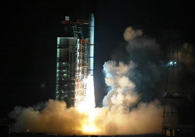
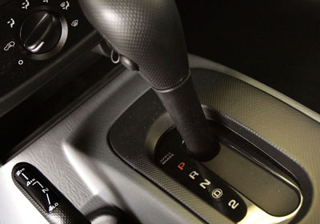
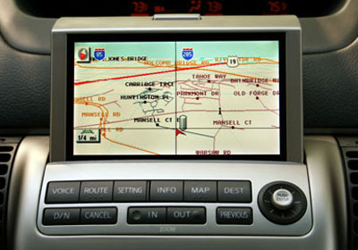
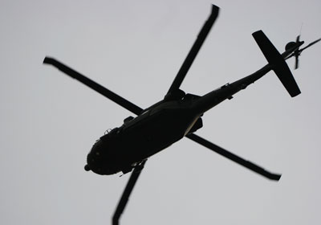

|
Innovations in Transportation
INDEX
- Rocket Engine
- Jet Ingine
- Automatic Transmission
- Global Positioning System-GPS
- Helicopters
Rocket Engine
- Inspired as a child by H.G. Wells' War of the Worlds, Clark University physicist Robert Hutchings Goddard (1882-1945) spent most of his professional life developing mathematical theories on combustible propellants and theorizing that rocket engines could produce sufficient thrust to make space flight a reality.
- He put them to use in 1926, launching the first rocket from a field near Auburn, Mass. Favoring a nose-mounted engine that burned liquid fuel, his ten-foot projectile went only 41 feet into the air. A small flight for the capsule; a giant leap in rocketry.

Jet Engine
- As a cadet in the Royal Air Force, Sir Frank Whittle (1907-1996) wrote a thesis that radically changed the future of aircraft design.
- Whittle predicted that a system of turbines and compressed air that burned vaporized fuel would make propellered craft obsolete.
- He patented the system in 1930 but spent another decade getting the turbine off the ground. In a 1941 test flight, the world's first jet reached 370 miles per hour, far faster than propped planes.
Automatic Transmission
- A clackety transmission on an old Pierce-Arrow sent Earl Thompson on a 30-year quest to smooth things out.
- His answer: the Hydra-Matic, the first mass-marketed automatic transmission. Installed in 1940 Oldsmobiles, the new transmissions attracted 25,000 orders in their first year.
- The U.S. military liked them, too: They were put into light tanks used during World War II

Global Positioning System-GPS
- The Global Positioning System was pioneered in 1978 by the U.S. Department of Defense and Dr. Ivan Getting, former vice president for engineering and research at the Raytheon Corporation.
- Eighteen satellites, six in each of three orbital planes spaced 120 degrees apart, and their ground stations, formed the original GPS. GPS uses these satellites as reference points to calculate geographical positions.
- In late 2005, the first in a series of next-generation GPS satellites was added to this constellation, offering several new capabilities, including a second civilian GPS signal, called L2C, for enhanced accuracy and reliability.

Helicopters
- Thanks to his obsession with vertical flight, Igor I. Sikorsky (1889-1972) forever changed the face of warfare, rescue and travel
- Born in Russia, Sikorsky fled to the U.S. after the Bolshevik Revolution. Soon after, he started Sikorsky Aero Engineering (now part of United Technologies), where he developed the amphibious airplane and the boat plane, both of which opened air travel to South America. In 1931, he patented the now-familiar design for the helicopter: one main rotor overhead and one vertical tail rotor, a design breakthrough that gave the whirlybird its unique maneuverability.
- In September 1939, he built the first practical helicopter, the VS-300.

*************************************************************************************************************************
|
|